Modélisation des actions mécaniques — global/local
Document original (PDF professeur) protégé par mot de passe sur le site source — voir la section Sources ci-dessous pour le mot de passe d'accès au site aroux-sii.fr.
Compétence attendue : modéliser une action mécanique.
1. Modélisation globale — locale
Un solide peut être caractérisé par un ensemble de points matériels $P_i$. Chaque point matériel $P_i$ est soumis à une action mécanique élémentaire $\vec{F_i}$.
- Modèle local : réalisé par un champ de vecteurs $\vec{F_i}$, un par point matériel — décrit l'action mécanique point par point.
- Modèle global : réalisé par un champ de torseurs — décrit l'effet résultant de l'ensemble des actions locales en un point donné.
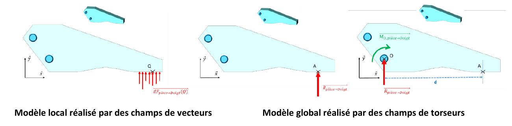
1.1. Répartition des actions mécaniques
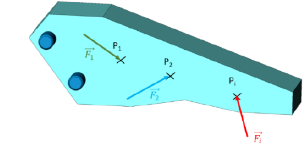
La modélisation locale fait intervenir les forces élémentaires $\vec{F_i}$ qui agissent sur chaque point matériel $P_i$. L'effet local de l'action $\vec{F_i}$ en $P_i$ se modélise par le torseur :
$$\{dT_{i\to S}\}=\left\{\begin{array}{l}\overrightarrow{dR_{i\to S}}=\vec{F_i}\\ \overrightarrow{dM_{P_i,i\to S}}=\vec{0}\end{array}\right\}_{P_i}$$
L'effet global de l'ensemble des actions élémentaires $\vec{F_i}$, exprimé en un point A, se modélise par :
$$\{T_{i\to S}\}=\left\{\begin{array}{l}\overrightarrow{R_{i\to S}}=\sum_i \overrightarrow{dR_{i\to S}}=\sum_i \vec{F_i}\\ \overrightarrow{M_{A,i\to S}}=\sum_i \overrightarrow{dM_{A,i\to S}}=\sum_i \overrightarrow{AP_i}\wedge \vec{F_i}\end{array}\right\}_A$$
1.2. Modèle de torseur des actions mécaniques locales
Dans cette partie, le domaine $\Omega$ représente soit :
- Un volume
- Une surface
- Une ligne
Pour définir la forme du torseur des actions mécaniques locales agissant sur un élément de domaine $d\Omega$, on fait l'hypothèse que l'action mécanique élémentaire agissant sur un élément de domaine $d\Omega$ est proportionnelle à la mesure de cet élément de domaine. On définit alors le torseur des actions mécaniques locales au point M du domaine :
| Domaine $\Omega$ | Torseur local | Nom de $\overrightarrow{eff(M)}$ |
|---|---|---|
| Volume | $\overrightarrow{dF(M)}=\overrightarrow{eff(M)}.dV$ | densité volumique d'efforts (N/m³) |
| Surface | $\overrightarrow{dF(M)}=\overrightarrow{eff(M)}.dS$ | densité surfacique d'efforts (N/m²) |
| Ligne | $\overrightarrow{dF(M)}=\overrightarrow{eff(M)}.dL$ | densité linéique d'efforts (N/m) |
Éléments d'intégration usuels selon le système de coordonnées :
| Système | $dS$ | $dV$ |
|---|---|---|
| Cartésien | $dx.dy$ | $dx.dy.dz$ |
| Cylindrique | $r.d\theta.dz$ | $r.d\theta.dz.dr$ |
| Sphérique | $r^2.\sin\varphi.d\varphi.d\theta$ | $r^2.\sin\varphi.d\varphi.d\theta.dr$ |
1.3. Modèle de torseur d'actions mécaniques globales
Une fois défini le torseur des actions mécaniques locales, on calcule le torseur global en un point A en intégrant l'ensemble des actions locales sur tout le domaine :
$$\{T\}=\left\{\begin{array}{l}\vec{F}=\displaystyle\int_\Omega \overrightarrow{dF(M)}=\int_\Omega \overrightarrow{eff(M)}\,d\Omega\\[4pt] \overrightarrow{M_A}=\displaystyle\int_\Omega \overrightarrow{AM}\wedge \overrightarrow{eff(M)}.\,d\Omega\end{array}\right\}_A$$
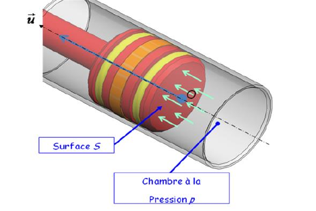
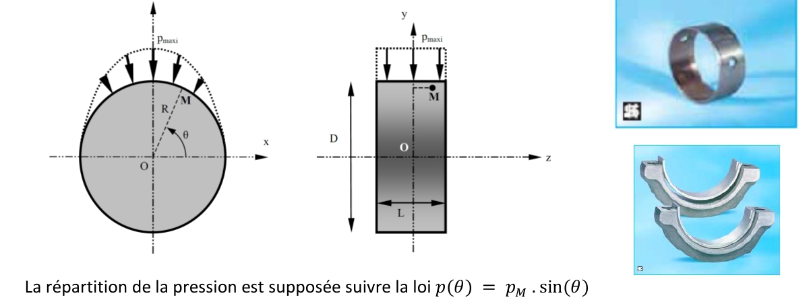
1.4. Centre de poussée d'une répartition de forces
Considérons une répartition d'effort de densité $\overrightarrow{eff(M)}$ sur le domaine $\Omega$. Le torseur d'action mécanique résultant s'écrit :
$$\{T_{f\to S}\}=\left\{\begin{array}{l}\overrightarrow{R_{f\to S}}=\displaystyle\int_\Omega \overrightarrow{eff(M)}\,d\Omega\\[4pt] \overrightarrow{M_{O,f\to S}}=\displaystyle\int_\Omega \overrightarrow{OM}\wedge\overrightarrow{eff(M)}.\,d\Omega\end{array}\right\}_O$$
Pour trouver $P$, on écrit la relation de changement de point du moment (transport du moment de O vers P) :
$$\overrightarrow{OP}\wedge \overrightarrow{R_{f\to S}}=\int_{M\in S}\overrightarrow{OM}\wedge\overrightarrow{eff(M)}.\,d\Omega$$
2. Modélisation des actions mécaniques à distance
2.1. Modélisation des actions mécaniques de pesanteur
La pesanteur agit en tout point d'un solide et résulte du phénomène d'attraction terrestre. Soit $\overrightarrow{eff(M)}$ la répartition volumique d'effort résultant de la pesanteur en tout point M d'un solide ; chaque élément de volume $dV$ est soumis à une action $\overrightarrow{dF(M)}$.
Pour un corps homogène, la pesanteur induit la répartition volumique d'effort :
Le torseur des actions mécaniques locales dû à la pesanteur, agissant sur $dV$, s'écrit en tout point M :
$$\{dT_{pes\to S}\}=\left\{\begin{array}{l}\overrightarrow{dR_{pes\to S}}=-\rho.g.dV.\vec z\\ \vec 0\end{array}\right\}_M$$
Le torseur global résultant, en un point O quelconque :
$$\{T_{pes\to S}\}=\left\{\begin{array}{l}\overrightarrow{R_{pes\to S}}=\displaystyle\int_{M\in S}-\rho.g.dV.\vec z\\[4pt] \overrightarrow{M_{O,pes\to S}}=\displaystyle\int_{M\in S}\overrightarrow{OM}\wedge(-\rho.g.dV.\vec z)\end{array}\right\}_O$$
Si G est le centre de gravité du solide S, le torseur se réduit à :
$$\{T_{pes\to S}\}=\left\{\begin{array}{l}\overrightarrow{R_{pes\to S}}=\vec P\\ \overrightarrow{M_{G,pes\to S}}=\vec 0\end{array}\right\}_G$$
où $\vec P$ représente le poids du solide S.
2.1.1. Définition du centre de gravité d'un solide
En faisant apparaître l'origine du repère : $\int_{M\in S}\overrightarrow{GM}.dm=\int_{M\in S}(\overrightarrow{G0}+\overrightarrow{OM}).dm=\vec 0 \Rightarrow m.\overrightarrow{OG}=\int_{M\in S}\overrightarrow{OM}.dm$, d'où :
$$\overrightarrow{OG}=\frac{1}{m}\int_{M\in S}\overrightarrow{OM}.dm$$
soit, coordonnée par coordonnée dans le repère $(\vec x,\vec y,\vec z)$ :
$$x_G=\frac{1}{m}\int_{M\in S}x.dm \qquad y_G=\frac{1}{m}\int_{M\in S}y.dm \qquad z_G=\frac{1}{m}\int_{M\in S}z.dm$$
2.1.2. Théorèmes de Guldin
Ces deux théorèmes permettent de trouver des surfaces, des volumes ou des positions de centres de gravité sans passer par une intégration directe — à condition que la courbe/surface génératrice ne traverse pas l'axe de rotation.
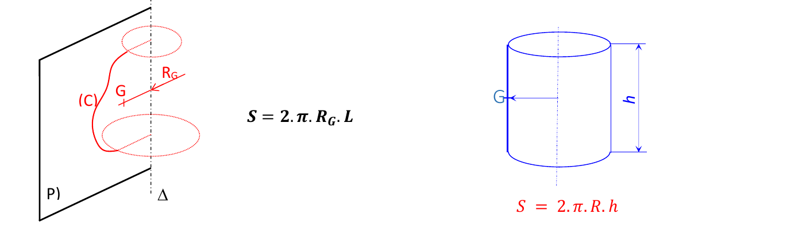
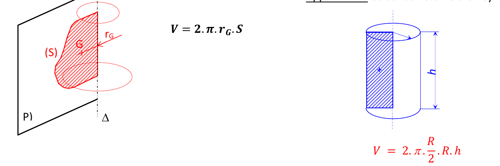
3. Modélisation des actions mécaniques, hypothèse du contact parfait
3.1. Modèle du contact parfait
- Les pièces mécaniques sont des solides indéformables.
- Les surfaces sont géométriquement parfaites.
- Les jeux sont nuls.
- Le contact est sans frottement, ni adhérence.
Conséquence : la puissance des efforts de liaison peut s'écrire par le comoment de torseur :
$$P_{i\to j}=\{T_{M,i\to j}\}\otimes\{V_{M,i/j}\}=\overrightarrow{R_{i\to j}}.\overrightarrow{V_{M\in i/j}}+\overrightarrow{\Omega_{i/j}}.\overrightarrow{M_{M,i\to j}}=0$$
En admettant ces hypothèses, les efforts transmis entre deux solides sont perpendiculaires au plan tangent commun aux deux solides. Soient deux solides $S_1$ et $S_2$ en contact selon une surface S ; on isole $S_2$ et on note $\overrightarrow{dF_{1\to 2}(M)}$ l'action élémentaire exercée par $S_1$ sur $S_2$ au point M, dirigée vers l'intérieur du solide isolé.
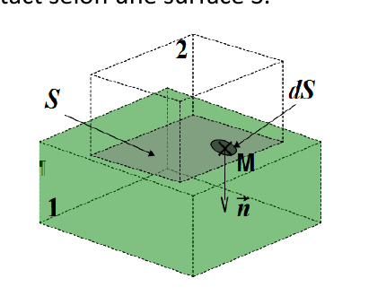
Le torseur global des actions mécaniques exercé par $S_1$ sur $S_2$, exprimé en un point O quelconque :
$$\{T_{1\to2}\}=\left\{\begin{array}{l}\overrightarrow{R_{1\to2}}=\displaystyle\int_{M\in S}-p(M).dS.\vec n(M)\\[4pt] \overrightarrow{M_{O,1\to2}}=\displaystyle\int_{M\in S}\overrightarrow{OM}\wedge-p(M).dS.\vec n(M)\end{array}\right\}_O$$
3.2. Actions mécaniques dans une liaison parfaite
Considérons une liaison appui-plan de normale $\vec z$, avec $(O,\vec x,\vec y,\vec z)$ un repère local. Le torseur des actions mécaniques exercées par 1 sur 2 s'écrit, dans le cas général :
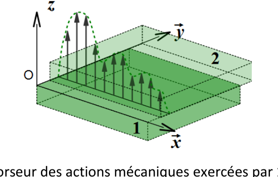
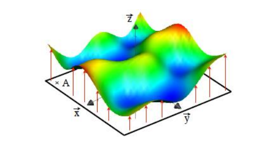
$$\{T_{1\to2}\}=\left\{\overrightarrow{R_{1\to2}}\atop \overrightarrow{M_{O,1\to2}}\right\}_O=\begin{pmatrix}X_{12}&L_{12}\\Y_{12}&M_{12}\\Z_{12}&N_{12}\end{pmatrix}_{(O,\vec x,\vec y,\vec z)}$$
L'objectif est de simplifier ce torseur compte tenu de la nature du contact. Deux méthodes le permettent (la seconde est à privilégier) :
3.2.1. Passage local-global
Dans une liaison appui-plan, la surface de contact est un plan : la densité d'effort élémentaire est portée par la normale extérieure au plan de contact, seule son intensité est inconnue.
$$\overrightarrow{dF_{1\to2}(M)}=-p(M).dS.\vec n(M)$$
Résultante : $\overrightarrow{R_{1\to2}}=\displaystyle\int_{M\in S}-p(M).dS.\vec n(M)=\int_{M\in S}-p(M).dS.\vec z=Z_{12}.\vec z$ avec $\vec n(M)=\vec z$ en tout point M.
Moment en O : $\overrightarrow{M_{O,1\to2}}=\displaystyle\int_{M\in S}\overrightarrow{OM}\wedge-p(M).dS.\vec n(M)=\int_{M\in S}(x.\vec x+y.\vec y)\wedge-p(M).dS.\vec z$
$$\overrightarrow{M_{O,1\to2}}=\int_{M\in S}\big(x.p(M).dS.\vec y-y.p(M).dS.\vec x\big)=M_{12}.\vec y+L_{12}.\vec x$$
3.2.2. Complémentarité cinématique-statique
Le torseur des actions mécaniques transmissibles du solide 2 sur le solide 1 peut directement se déduire du torseur cinématique du solide 2 par rapport au solide 1 (principe de dualité cinématique/statique — un degré de liberté cinématique correspond à une composante d'effort nulle, et réciproquement).
3.3. Action hydrostatique d'un fluide sur un solide
On cherche à modéliser l'action mécanique exercée par un fluide sur une paroi solide.
Soit M un point d'un fluide à l'altitude z (axe $\vec z$ vertical descendant). La pression varie selon la loi $p(z)=\rho.g.z+cste$, la constante étant fixée par la connaissance de la pression en au moins un point de l'espace (elle dépend du paramétrage retenu pour chaque exercice).
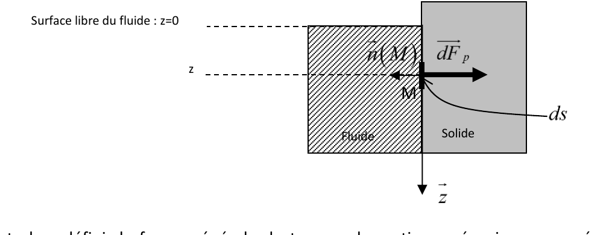
L'effort élémentaire $\overrightarrow{dF_P}$ agissant sur un élément de surface $dS$ est donné par $\overrightarrow{dF_P}=-p(M).dS.\vec n(M)$, d'où la forme générale du torseur des actions mécaniques exercées par le fluide sur une paroi :
$$\{T_{Fluide\to S}\}=\left\{\begin{array}{l}\overrightarrow{R_{Fluide\to S}}=\displaystyle\int_{M\in S}-p(M).dS.\vec n(M)\\[4pt] \overrightarrow{M_{O,Fluide\to S}}=\displaystyle\int_{M\in S}\overrightarrow{OM}\wedge-p(M).dS.\vec n(M)\end{array}\right\}_O$$
4. Modélisation locale des actions mécaniques de contact avec frottement
4.1. Contact surfacique ou linéique avec frottement
Les lois de Coulomb concernant le frottement de glissement ne sont valables strictement que pour un contact ponctuel ou « quasi ponctuel ». Or, très souvent, le contact entre deux solides s'effectue sur une surface entière. Il suffit alors de considérer de petites zones « quasi ponctuelles » autour de chaque point de la zone de contact, et d'écrire les lois de Coulomb sur les densités surfaciques d'actions mécaniques.
4.2. Modèle local avec frottement
Dans la pratique, le contact ne s'effectue jamais sur des surfaces parfaitement lisses, mais présente des aspérités à l'échelle microscopique — d'où la nécessité d'étudier ce phénomène au niveau local.
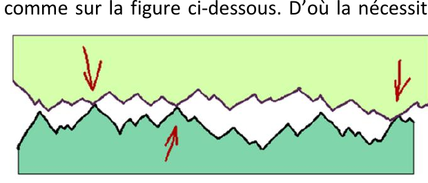
On considère un domaine de contact $\Omega$ (surface S ou ligne de longueur L) et un élément de domaine $d\Omega$ autour d'un point P de normale $\vec n(P)$ (normale extérieure à 2, dirigée de 2 vers 1). Le torseur élémentaire d'action mécanique de 1 sur 2 est donné en P par :
$$\{dT_{1\to2}\}=\left\{\begin{array}{l}\overrightarrow{dF_{1\to2}(P)}=\overrightarrow{eff(P)}\,d\Omega\\ \vec 0\end{array}\right\}_P$$
où $\overrightarrow{eff(P)}$ est la densité d'efforts en P : densité linéique (N/m) si le contact est linéique, densité surfacique (N/m²) s'il est surfacique.
Rappel — dans le modèle de contact parfait, la densité d'efforts est dirigée selon la normale au contact : $\overrightarrow{eff(P)}=-p(P).\vec n(P)$. Pour prendre en compte le frottement au niveau de cet élément de domaine, on pose :
4.3. Lois de Coulomb locales
Les lois de Coulomb locales sont les mêmes que celles obtenues pour le contact ponctuel, mais portent sur les densités de forces. On note $\vec t(P)$ le vecteur unitaire directeur de la vitesse de glissement $\overrightarrow{V_{P\in2/1}}$ : $\vec t(P)=\dfrac{\overrightarrow{V_{P\in2/1}}}{\|\overrightarrow{V_{P\in2/1}}\|}$.
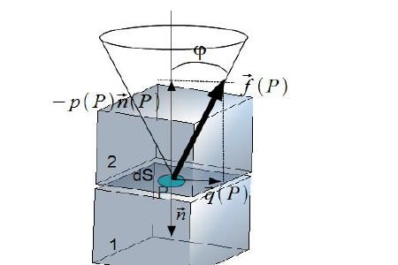
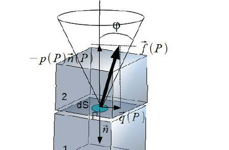
4.4. De l'action mécanique locale à l'action mécanique globale
La détermination du torseur d'action mécanique global nécessite l'écriture du torseur local en un point fixé, puis une intégration sur le domaine :
$$\{T_{1\to2}\}=\left\{\begin{array}{l}\overrightarrow{R_{1\to2}}=\displaystyle\int_\Omega\big[-p(P).\vec n(P)+\vec q(P)\big]\,d\Omega\\[4pt] \overrightarrow{M_{A,1\to2}}=\displaystyle\int_\Omega\overrightarrow{AP}\wedge\big[-p(P).\vec n(P)+\vec q(P)\big]\,d\Omega\end{array}\right\}_A$$
Comme pour le contact ponctuel, on se placera très souvent à la limite de glissement pour connaître la densité tangentielle d'efforts $q(P)$. Il faut alors également connaître la loi de répartition de la pression $p(P)$, le plus souvent supposée constante dans les cas les plus courants.
4.5. Frottement visqueux local
Le frottement visqueux local s'appuie sur la même théorie que le frottement visqueux vu pour les liaisons ponctuelles. Localement, il sera très souvent représenté par un effort local de type amortisseur :
$$\vec p(P)=-k.\vec v \quad(k \text{ coefficient de l'amortissement local, en N.s/m}^3)$$
Quiz de fin de chapitre
Sources
- Cours « Modélisation des actions mécaniques — global/local », A. Roux, Lycée Gustave Eiffel (Bordeaux), PCSI/PSI — SII : aroux-sii.fr (site protégé par mot de passe — mot de passe d'accès :
psi*2627). - Document original (PDF) : 10-2026-09-19_SI_Cours_Statique-Modelisation-globale-locale.pdf.
- Théorèmes de Guldin (Pappus–Guldinus) : tout manuel de référence de mécanique générale prépa (ex. H-Prépa Mécanique) ou théorème de Pappus-Guldin.
- Programme officiel de Sciences Industrielles pour l'Ingénieur, CPGE 1re année (filière PCSI) : enseignementsup-recherche.gouv.fr.